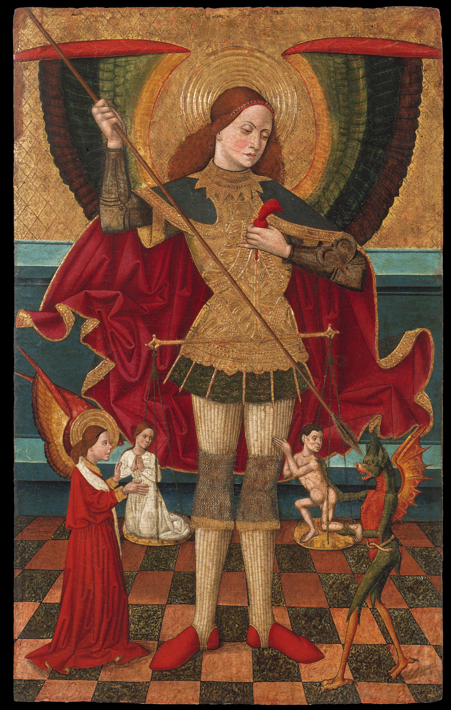
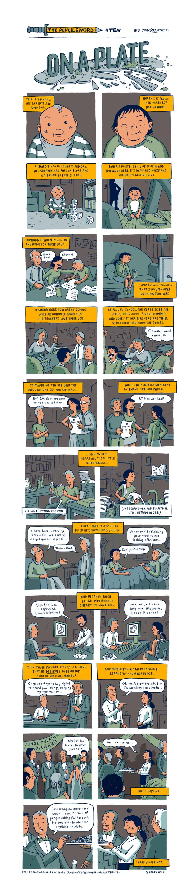

교회와 십일조는 너희를 구원하지 못한다 - There But For Fortune 가사 해설
게시: 2021-01-14T06:30:03+09:00
저는 불만이 많고 믿음이 약하기는 해도 기독교인입니다. 구원예정설이라는 개념에 대해서는 수십년 전 고등학교 윤리 시간에 배우기는 했습니다만, 그때는 그게 무슨 얼토당토 않은 개솔휘인가 라고만 생각하고 넘어갔습니다. 그리고 비교적 최근인 몇 년 전에야 그에 대해 좀 읽어보게 되었는데, 제가 이해한 그 핵심은 바로 이것이었습니다. "신의 은총 없이는 인간은 아무것도 아니며, 우리가 구원을 받는다면 우리의 믿음이 강하거나 우리의 선행이 충분히 훌륭하기 때문이 아니다." 즉 교만해서는 안된다는 것입니다. 불교처럼 개인의 노력으로 깨달음을 얻고 해탈하는 것이 아닌, 오로지 신에게 전적으로 의존해야 하는 기독교 교리의 핵심인 셈입니다. 저는 어느덧 매주 교회를 다닌지 20년이 훨씬 넘었습니다만, 여러 교회에서 단 한번도 목사님이 이 구원예정설에 대해서 언급하시는 것을 본 적이 없습니다. 그 이유는 이해가 갑니다. 평신도들에게는 그 개념이 다소 난해하고 허무할 수 있기 때문입니다. 평소에 예수님이 구주임을 믿고 선행을 쌓고 기도 열심히 하고 십일조 꼬박꼬박 해야 구원받고 천국에 갈 수 있다고 가르쳐야 하는데, 사실 하나님께서는 누구를 구원할지 이미 다 정해 놓으셨고 니들의 노력은 사실 아무 것도 아니며 천국이란 열심히 공부해서 좋은 성적 받으면 갈 수 있는 곳이 아니라는 것은 굉장히 충격적인 내용일 수 있습니다.

(죽은 자의 영혼의 무게를 재고 있는 대천사 미카엘입니다. 15세기 스페인 화가 Juan de la Abadía el Viejo의 그림입니다.)
그러나 생각해보면 여러분이 선행을 할 고운 심성을 심어준 분도 하나님이시고, 여러분이 교회를 접할 수 있는 시대와 장소에 태어나게 해주신 분도 하나님입니다. 그러니 여러분의 믿음이나 십일조 따위는 아무 것도 아니며 오로지 신의 은총만이 여러분을 구원할 수 있다는 것은 쉽게 이해가 가는 일입니다. 내가 태어나기 전부터 나의 구원 여부가 결정된다는 것은 너무 불공평하지 않냐고요? 글쎄요, 신의 뜻을 인간의 두뇌로 이해를 하려는 것은 무한도전에 가까운 일입니다만, 애초에 우리의 생김새나 키, IQ, 다리 길이 등이 모두 우리가 태어나기 전에 결정된다는 것을 생각하면 구원 여부도 그렇게 미리 결정되는 것이 불공평한 일일지는 몰라도 결코 이상한 일은 아닌 것 같습니다. 저는 아직 잘 이해를 못합니다만, 이것은 결코 체념적인 운명론이 아닙니다. 모든 것이 이미 결정되어 있으니 난 노력할 필요도 없고 착하게 살 필요도 없다는 뜻이 아니라는 이야기입니다. 반대로, 우리가 누리고 있는 모든 것은 오로지 신의 은총에 의한 것이며 결코 우리가 그럴 만한 자격을 갖추고 있기 때문에 당연히 누려도 된다는 것이 아니라는 뜻입니다.

('내가 노력해서 얻은 것이니 내가 이걸 누리는 것은 공정하다' ? 과연 그럴까요 ? source : tri-lakescares.org/2016/01/28/on-a-plate-a-short-story-about-privilege/ )
저는 구원예정설의 진정한 의미가 바로 그런 것이며, 예수님께서 '서로 사랑하여라. 내가 너희를 사랑한 것처럼 너희도 서로 사랑하여라' (요한복음 13:34) 라는 새로운 계명을 내리신 이유가 바로 그것이라고 생각합니다. 그런 점에서, 1960년대 베트남 전쟁이 한창일 때 대표적인 반전 노래였던 'There But For Fortune'이야말로, 구원예정설의 의미를 가장 잘 보여주는 노래입니다. 불운에 처한 이웃들을 위해 사회 복지 확대에 찬성해주시면 고맙겠습니다. 존 바에즈가 부르는 There But For Fortune은 다음 유튜브에서 감상하세요.

There But For Fortune 행운이 없었다면 거기에
--------------------------
Show me the prison, show me the jail Show me the prisoner whose life has gone stale 감옥을 보여줘요, 교도소를 보여줘요 삶이 바래져버린 죄수를 보여줘봐요 And I'll show you a young man with so many reasons why There but for fortune go you or I 그 사람이 그렇게 될 때까지 수많은 사연이 있는 젊은이라는 것을 보여줄게요 행운이 없었다면 거기에 당신이나 제가 갈 수도 있었어요 Show me the alley, show me the train Show me the hobo who sleeps out in the rain 뒷골목을 보여줘요, 기차를 보여줘요 빗 속에서 잠을 자야하는 부랑자를 보여줘봐요 And I'll show you a young man with so many reasons why There but for fortune go you or I 그 사람이 그렇게 될 때까지 수많은 사연이 있는 젊은이라는 것을 보여줄게요 행운이 없었다면 거기에 당신이나 제가 갈 수도 있었어요 Show me the whiskey stains on the floor Show me the drunkard as he stumbles out the door 바닥에 떨어진 위스키 자국을 보여줘요 문간에서 쓰러지는 주정뱅이를 보여줘봐요 And I'll show you a young man with so many reasons why There but for fortune go you or I 그 사람이 그렇게 될 때까지 수많은 사연이 있는 젊은이라는 것을 보여줄게요 행운이 없었다면 거기에 당신이나 제가 갈 수도 있었어요 Show me the country where the bombs had to fall Show me the ruins of the buildings once so tall 폭탄이 떨어져야 했던 나라를 보여줘요 한때 우뚝 섰던 건물들의 잔해를 보여줘봐요 And I'll show you a young land with so many reasons why There but for fortune go you and I You and I 그 나라가 그렇게 될 때까지 수많은 사연이 있는 젊은 나라라는 것을 보여줄게요 행운이 없었다면 거기에 당신과 제가 갈 수도 있었어요 당신과 제가요